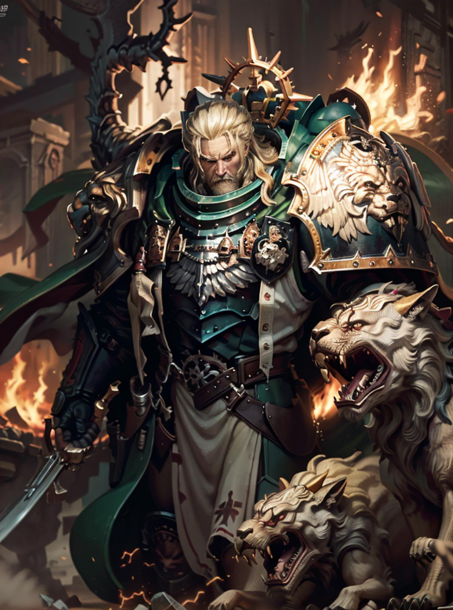

Lion El'Jonson, a menudo llamado "el León" durante su vida, conocido también por el cognomen "El Primero" y los honoríficos "Primaris Angelus Mortis" y "Caballero de Nihilus", es el primarca de la I Legión de Marines Espaciales, los Ángeles Oscuros. Tras los acontecimientos de la Herejía de Horus, El'Jonson y su flota cruzada regresaron a su mundo natal de Caliban. Inexplicablemente, fueron atacados por las fuerzas de los Ángeles Oscuros acuarteladas allí bajo el mando de su mentor y padre sustituto, Luther, a quien se había confiado la custodia de Caliban en ausencia del León. Luther acabaría traicionando al León tras dejarse seducir por las ofertas del Caos, uniendo a su causa a buena parte de los Ángeles Oscuros que sus compañeros habían dejado atrás para guarnecer el mundo natal de la Legión y atacando la flota del León cuando éste regresó a Caliban. evolución tecnológica.
